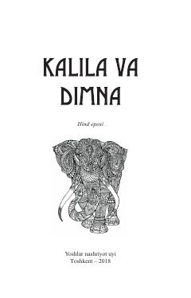

KVHayvonlar tilidan hikoya qilinadigan qadimiy hind donishmandlik va ibratli rivoyatlar to'plami.
Ushbu asar qadimiy hind eposi bo'lib, unda hayvonlar tilidan hikoya qilinadigan ibratli rivoyatlar jamlangan. Kitob insoniy fazilatlar, donishmandlik va hayotiy tajribalarni majoziy shaklda yoritib beradi.